Häufig wechselt man schnell zwischen Editier- und Objekt-Modus hin und her. Dafür ist die Tab-Taste sehr praktisch.
Tab-wechselt zwischen den letzten beiden genutzten Modi
Strg + Tab-öffnet das Radialmenü, um zwischen allen verfügbaren Modi frei zu wechseln
<<<<<<< HEAD
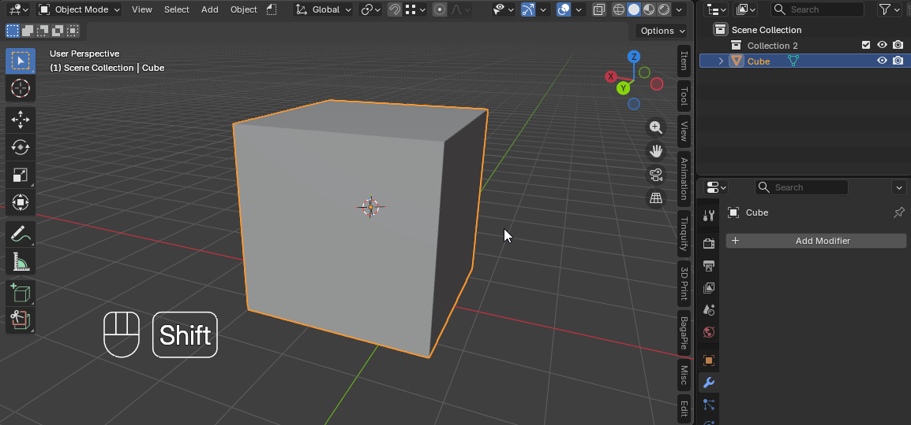
=======
>>>>>>> 5e989b56a4ada9b3ddae25afa6bc398bd9947146
02
Search Menü
Jeder Befehl lässt sich über das Search Menü ausführen, das je nach Workspace-Fenster und Modus alle Befehle auflistet, die in diesem Kontext verfügbar sind.
F3-Öffnet das Search Menü
<<<<<<< HEAD
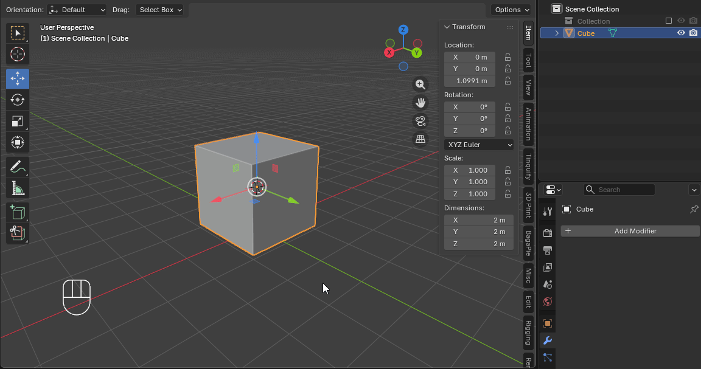
=======
>>>>>>> 5e989b56a4ada9b3ddae25afa6bc398bd9947146
View
Orientierung & Sichtbarkeit
Werkzeuge, um im Viewport den Überblick zu behalten.
Blender verliert seine räumliche Orientierung im Viewport meist dann, wenn man sich beim Navigieren mit der mittleren Maustaste zu weit von den Objekten wegbewegt hat oder sich im leeren Raum bewegt.
Hinweis: In Blender wird das amerikanische Tastatur-Layout angezeigt, daher steht bei den dortigen Tooltips Numpad ,.
Numpad .-Frame Selected - Fokus auf ausgewählte Objekte/Elemente
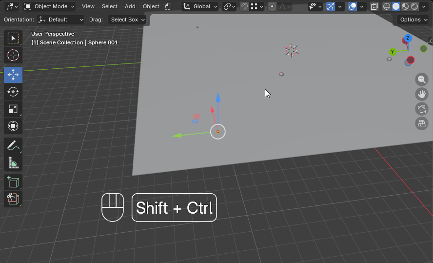
02
Isolation eines oder mehrere Objekte
Wenn man an einer großen Szene mit vielen Objekten arbeitet, ist es hilfreich, wenn man ein paar Objekte ausblenden kann.
Einige Laptops haben kein Numpad. Hier kann man entweder das Blender-Keyboard-Layout komplett über Edit → Preferences ändern oder einige wenige Funktionen den Quick Favorites zuordnen.
-Add to Quick Favorites - Diesen Menüpunkt den Quick Favorites zuordnen
Q-Quick Favorites - Quick Favorites öffnen
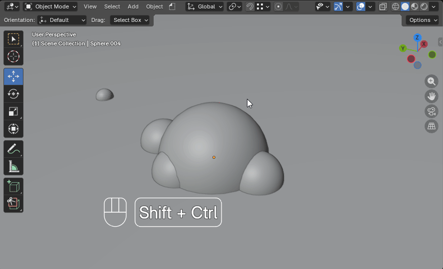
Transform
Grundoperationen
Objekte, Flächen, Kanten, Punkte im Raum verschieben, drehen, skalieren.
Mit diesen Shortcuts bewegt, rotiert oder skaliert man ein Objekt frei im Raum.
G-Grab - Objekt frei bewegen
R-Rotate - Objekt frei drehen
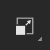
S-Scale - Objekt frei skalieren
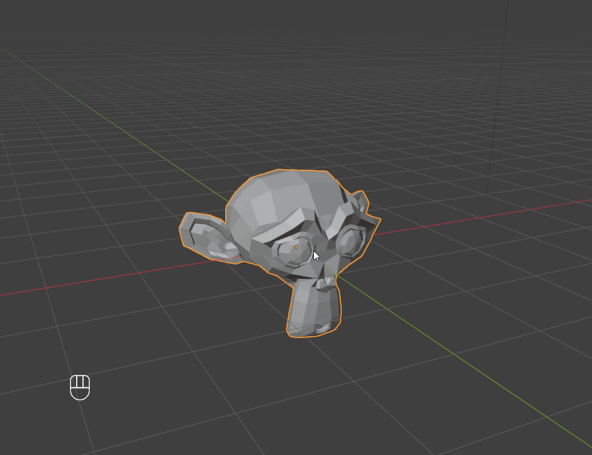
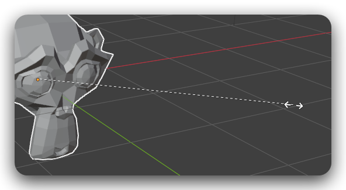
Je weiter man mit der Maus vom Origin (Mittelpunkt) entfernt ist, desto sanfter funktionieren die Bewegungen.
02
Auf ausgewählte Achsen beschränken
Während einer Bewegung lässt sich die Transformation auf eine oder zwei Achsen einschränken. Lässt sich auch mit anderen Funktionen kombinieren, z. B. Snapping, Duplizieren, Extrudieren, etc.
Auf eine Achse beschränken
G/R/S + X/Y/Z-Auf eine Achse beschränken
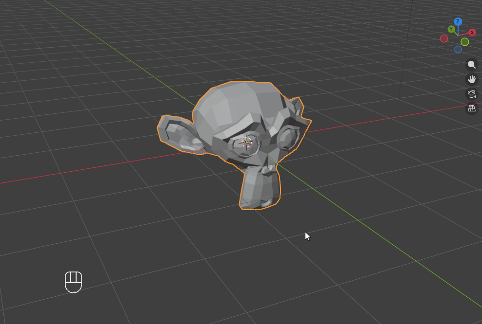
Auf zwei Achsen beschränken
G/R/S + Shift + X/Y/Z-Auf zwei Achsen beschränken
03
Auf feste Maßangaben beschränken
Bewegung mit Zahlenangaben — während einer Transformation lässt sich der genaue Wert direkt eintippen.
G/R/S + Zahl-Bewegung, Rotation oder Skalierung um exakten Wert
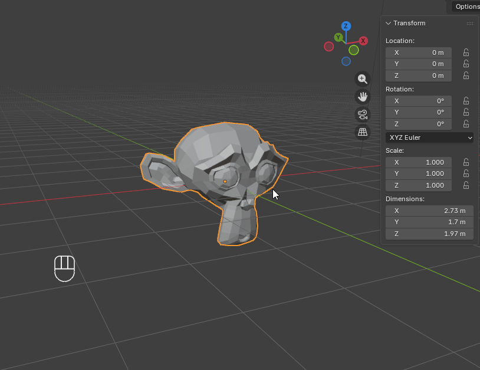
Skalierung auf 0
Wenn man eine Achse auf 0 skaliert, kann man die komplette Auswahl glattziehen (senkrecht zur Skalierungsachse).
S→X/Y/Z→0
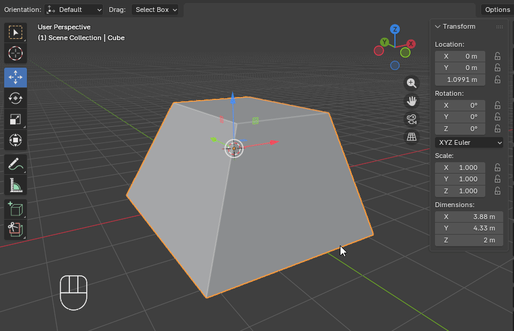
04
Auf Ausgangsmaße zurückstellen
Eine Transformation lässt sich jederzeit wieder auf ihren ursprünglichen Wert zurücksetzen.
⌫-Zurücksetzen
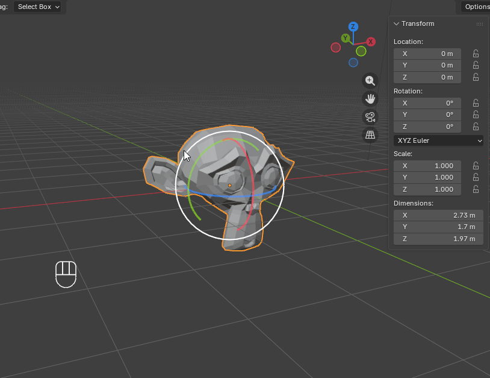
05
Transform-Werte kopieren
Die Location-, Rotation- und Skalierungs-Werte können vom aktiven Objekt übernommen werden.
→Copy All to Selected-Kopiert alle Werte aus diesem Block auf die komplette Auswahl
→Copy Single to Selected-Kopiert einen Wert auf die komplette Auswahl
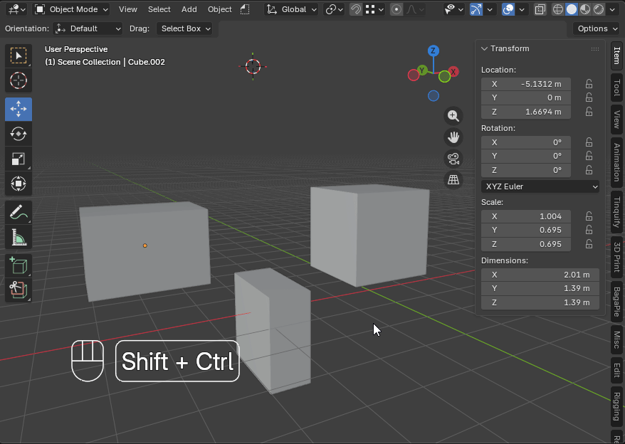
Wert auf einzelnes Objekt kopieren
Um einen Wert zu kopieren, muss die Maus einfach nur über der Schaltfläche sein.
Ein Klick ist nicht nötig.
Strg + C-kopiert den Wert
Strg + V-fügt den Wert ein
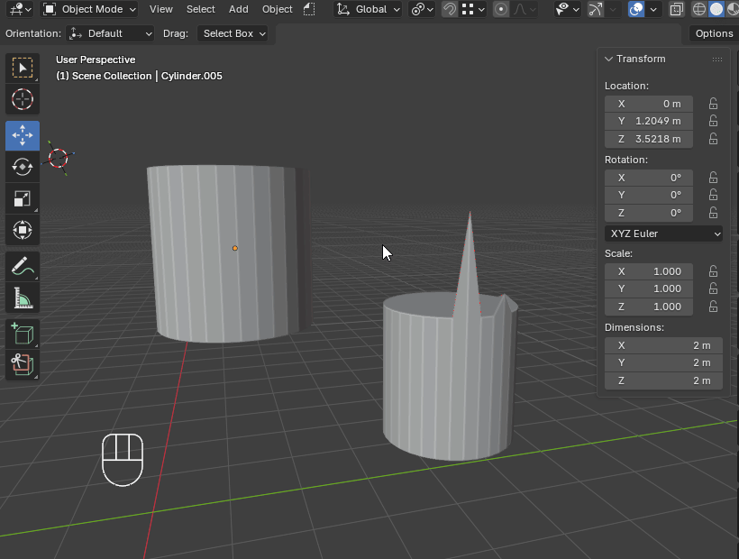
Selection
Auswählen & Abziehen
Elemente im Outliner und im 3D-Viewport gezielt zur Auswahl hinzufügen oder daraus entfernen.
Achtung: Dieselben Tasten können je nach Kontext — 3D-Viewport oder Outliner-Fenster — unterschiedliche Funktionen auslösen.
Wenn man in Blender mehrere Objekte oder Elemente auswählt, fällt auf, dass alle die gleiche Markierung erhalten und ein Objekt oder Element etwas hervorsticht.
Das ist das sogenannte Active Object/Element.
Grundsätzlich sieht man nur die Werte, Modifier etc. des aktiven Objekts und wenn man diese Werte in den Menüpunkten verändert, ist nur das aktive Element betroffen.
Man wählt ein neues Element als das aktive Element aus, indem man innerhalb der momentanen Auswahl die Shift-Taste gedrückt hält.
Shift + -Innerhalb einer Auswahl ein neues aktives Element auswählen
Das aktive Element sticht in jedem Kontext anders hervor: Fläche im Edit Mode, Objekt im Viewport, Eintrag im Outliner.
Alle Werte gleichzeitig ändern
Wenn man alle Objekte gleichermaßen anpassen möchte, muss man die Alt-Taste gedrückt halten. Das funktioniert für viele Blender-Buttons, aber nicht für alle.
Hinweis: Die Modifier müssen alle den gleichen Namen besitzen, wenn man die Alt-Taste benutzen möchte.
Alt + -Ändert die Werte in diesem Block für alle ausgewählten Objekte
Alt + -Verschiebt die Werte in diesem Block gleichmäßig für alle ausgewählten Objekte
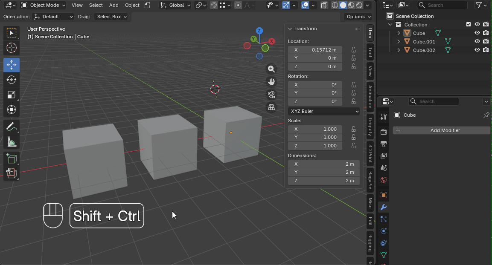
Verlinkung
Man kann auch noch weitere Eigenschaften vom aktiven Objekt auf andere übertragen, z.B. Materialien, Modifier oder auch alle Transforms gleichzeitig.
Object → Link/Transfer Data
Strg + L-Öffnet das Verlinkungsmenü
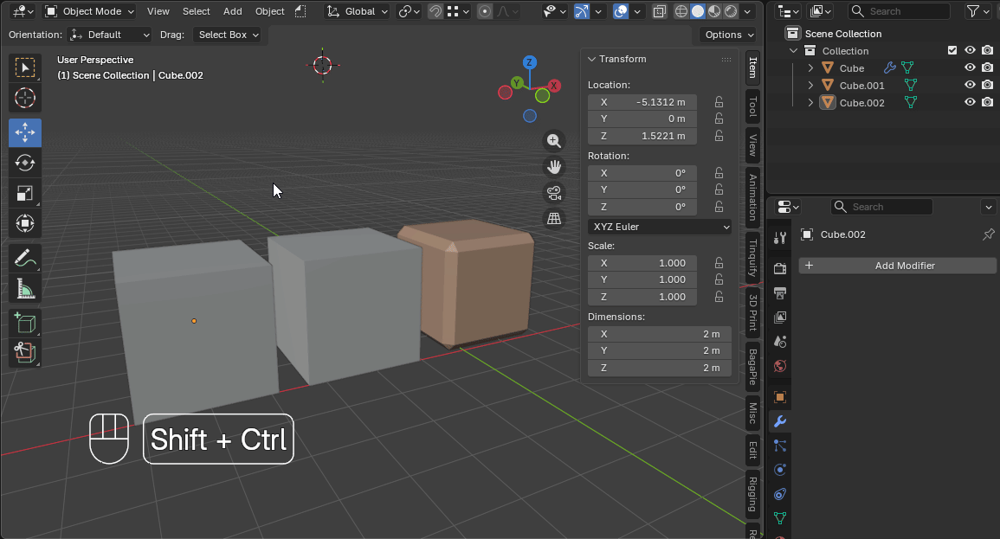
Apply Transforms
Werte in Geometrie überführen
Transform-Werte lassen sich jederzeit fest in die Geometrie schreiben — das hat spürbare Auswirkungen auf viele andere Bereiche.
Grundsätzlich können alle Transforms (Position, Rotation und Skalierung) – angewendet werden Apply.
Dabei werden die aktuellen Werte fest in die Geometrie des Objekts geschrieben. Die Transform-Werte werden anschließend auf 0, 0, 0 (Position/Rotation) bzw. 1, 1, 1 (Skalierung) zurückgesetzt.
In der Praxis wird am häufigsten die Skalierung, etwas seltener die Rotation und nur selten die Position angewendet. Statt die Position anzuwenden, wird häufig der Origin direkt verschoben.
1. Form & Werte
Ein 3D-Objekt besteht aus seiner reinen Form (Geometrie) und seinen Transform-Werten, die im Objekt-Modus gespeichert werden.
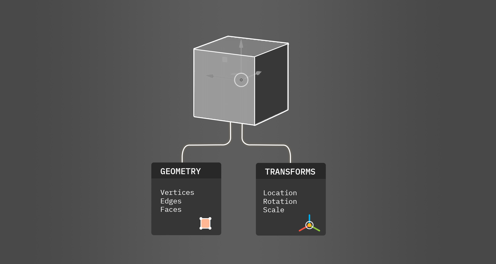
2. Transform
Wenn man beispielsweise im Objekt-Modus skaliert, ändert sich nicht die Geometrie, sondern es ändern sich nur die Skalierungswerte.
In diesem Beispiel bleibt die Geometrie des Würfels erhalten, obwohl er optisch wie ein flacher Quader aussieht. Diese Geometrie wird in Blender als Mesh Data gespeichert.
Besonders die Skalierung hat Auswirkungen auf viele andere Bereiche innerhalb von Blender, z.B. können Physiksimulationen doppelt so schnell ablaufen, UVs nicht richtig ausgegeben werden und Sculpting-Brushes verzerrt werden.
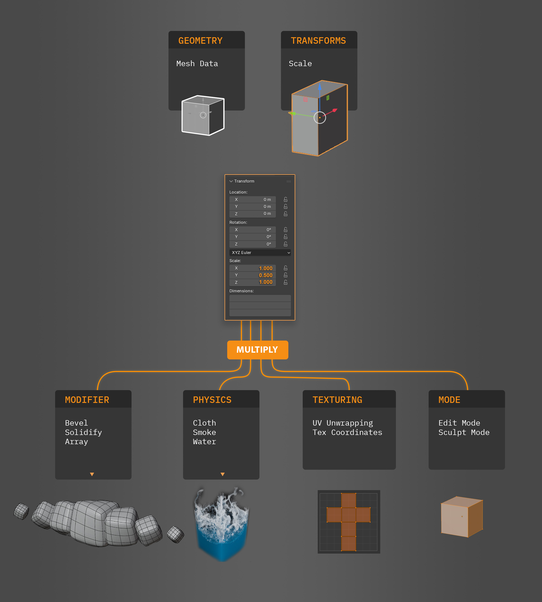
3. Apply Transforms
Dieser Vorgang schreibt die Werte in die Geometrie.
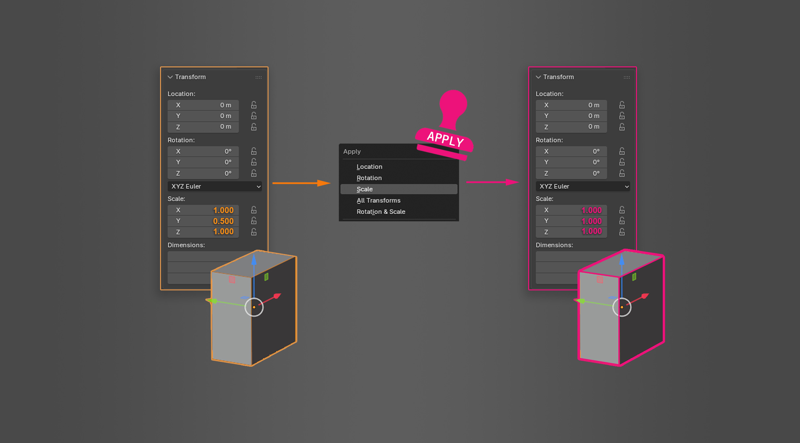
Auch wenn das Objekt erst einmal unverändert aussieht, so ist für Blender erst jetzt aus dem Würfel ein flacher Quader geworden.
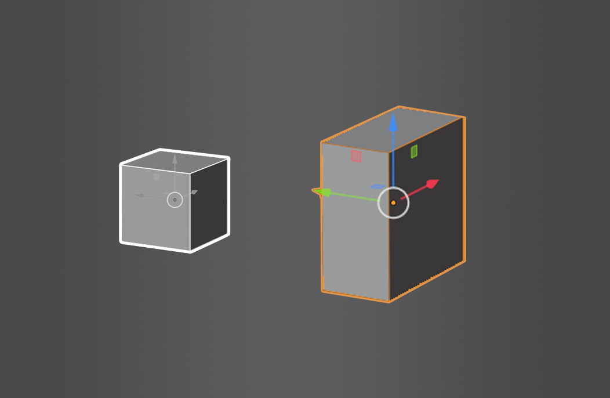
Mit uniformer Skalierung (z. B. 1,1,1 oder 2,2,2) verhalten sich dieselben Modi wieder wie meistens gewünscht.
Strg + A-Öffnet das Apply Transforms Menü
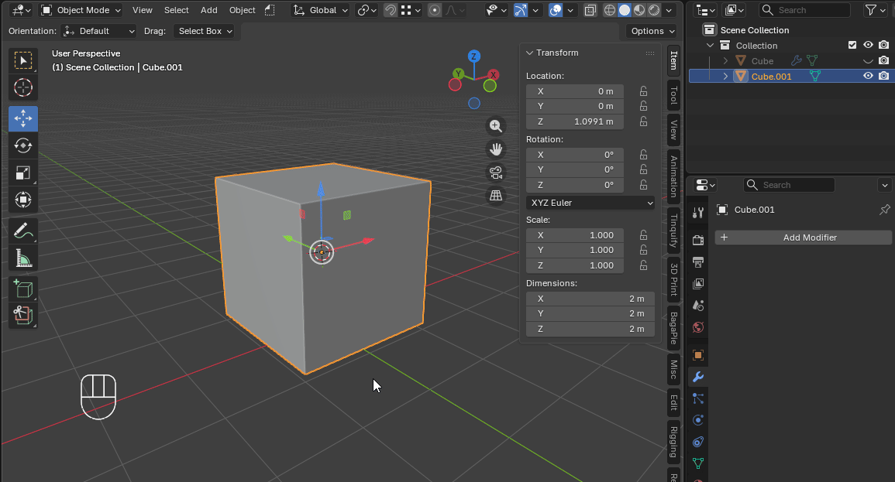
Mit uniformer Skalierung (z. B. 1,1,1 oder 2,2,2) verhalten sich dieselben Modi wieder wie meistens gewünscht.
-
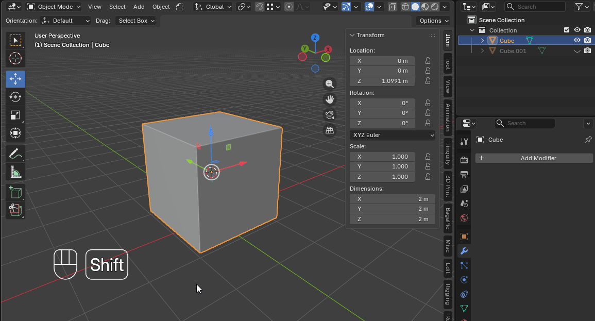
Verzichtet man auf "Apply Scale", zeigen sich die Anomalien, beispielsweise unregelmäßige Kantenlängen beim Inset im Edit Mode, langgezogene Brushes im Sculpt Mode und unregelmäßige Kantenlängen im Bevel-Modifier.
Origin
Origin verschieben
Der Origin ist wichtig für Modifier und häufig der Mittelpunkt einer Bewegung. Hier drei Methoden, wie man ihn verschieben kann.
Im Editiermenü gibt es jede Menge neue Werkzeuge in der Werkzeugleiste. Grün bedeutet, dass Geometrie hinzugefügt wird und rosa, dass sie verformt wird.
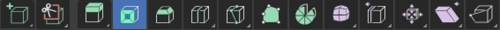
Einige Buttons haben unten rechts einen kleinen Pfeil. Diese Buttons kann man lange drücken, um mehr Optionen freizuschalten.
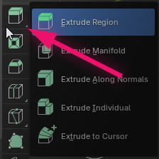
Ebenfalls kann man diese Werkzeuge vorher (1) oder nachher (2) noch individuell anpassen.
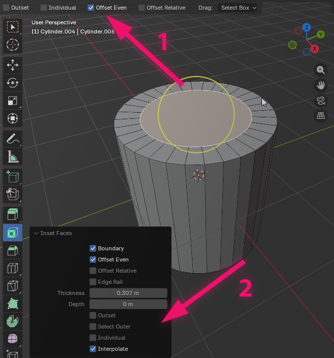
Am unteren Bildschirmrand kann man, während man ein Werkzeug aktiv benutzt, auch die verfügbaren Shortcuts sehen.
Im Folgenden wird nur auf die wichtigsten Optionen eingegangen.
02
Extrude
Zieht neue Flächen aus der Auswahl heraus und verlängert sie.
Extrude Region
Extrudiert alles in eine Richtung. Voreingestellt ist die mittlere Ausrichtung aller Flächen. Durch Drücken der Achsen kann das verändert werden.
E-Extrude Region - zieht die Auswahl in eine Richtung heraus
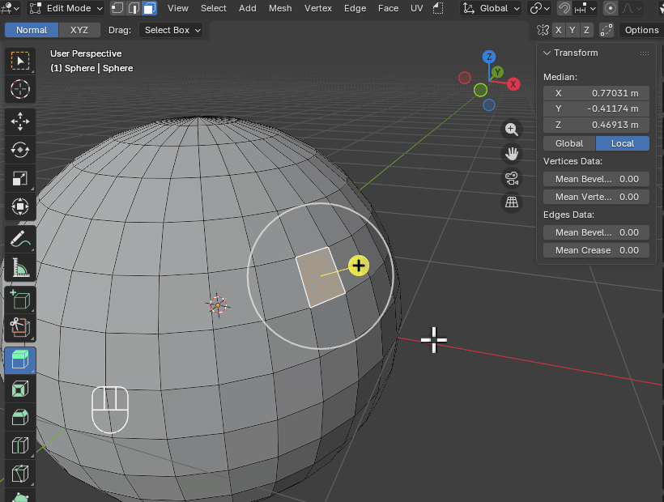
Extrude along Normals
Extrudiert jede Fläche entlang ihrer eigenen Ausrichtung und lässt sie verbunden.
Alt + E→Extrude Along Normals-extrudiert entlang der Normalen
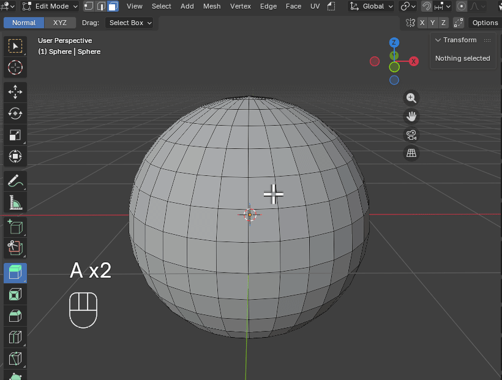
Extrude Individual
Extrudiert jede Fläche einzeln in ihre Richtung.
Alt + E→Extrude Individual-extrudiert jede Fläche einzeln
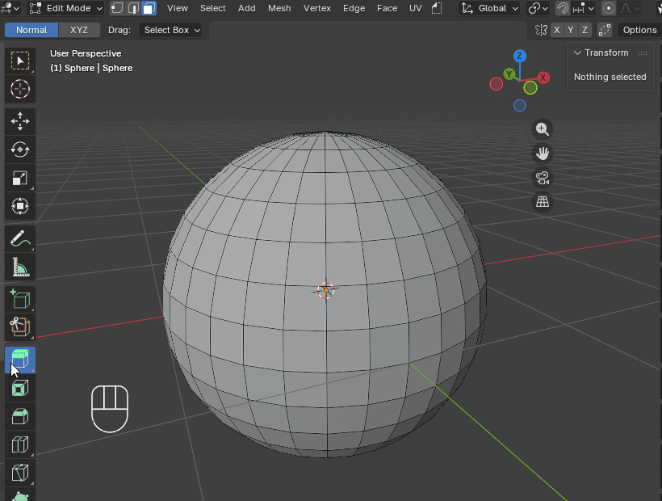
Extrude Manifold
Extrudiert nach innen und subtrahiert die Auswahl.
Alt + E→Extrude Manifold-extrudiert nach innen und subtrahiert
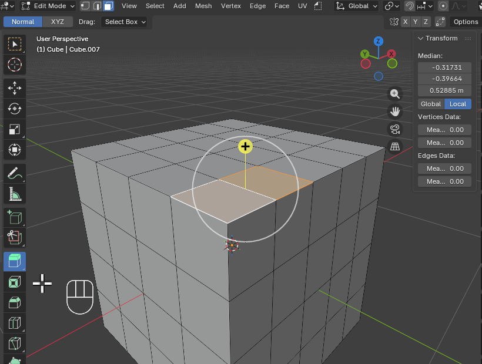
03
Inset
Setzt neue Flächen in eine Auswahl rein.
I-Inset Faces - setzt Flächen in die Auswahl und verbindet sie
2 × I-Inset Individually - setzt in jede einzelne Fläche eine neue rein
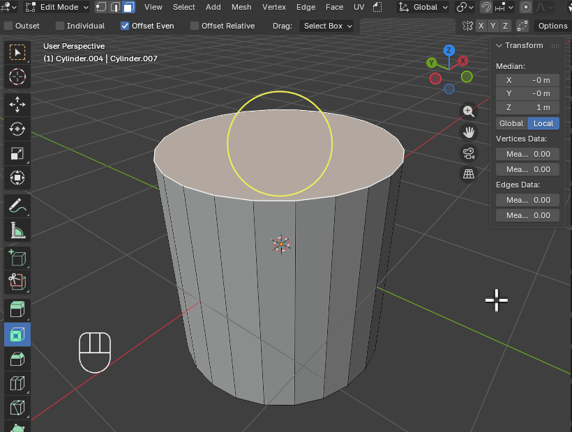
04
Bevel
Rundet Kanten ab oder fügt auf gerader Strecke neue Loops hinzu.
Strg + B-Bevel - rundet Kanten ab
Mausrad-fügt mehr Kanten hinzu
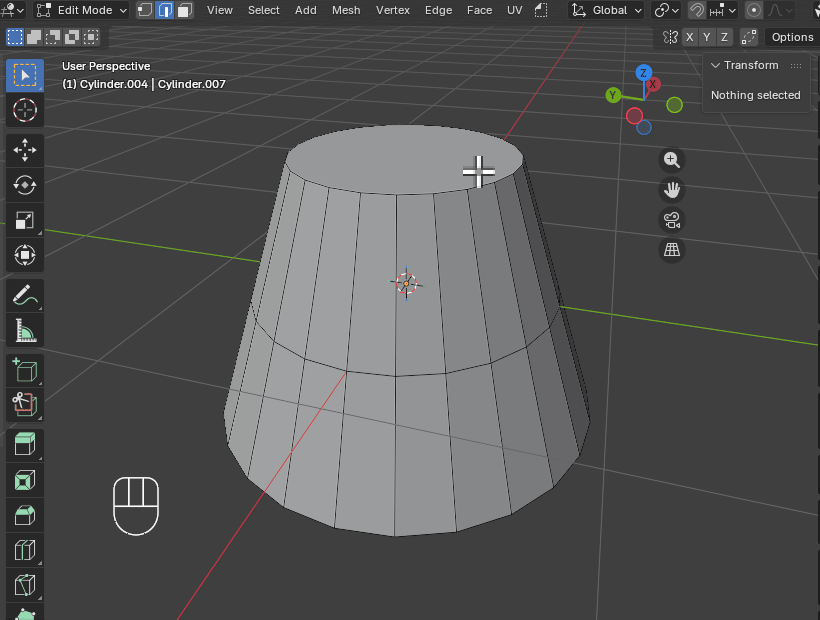
05
Loop Cut
Fügt eine Kante entlang miteinander verbundener Quads hinzu.
Strg + R + -setzt den Loop Cut ein
Strg + R + -verschiebt den Loop Cut
Strg + R + Mausrad-verändert die Anzahl der Loop Cuts
Strg + R + E-verschiebt die Loop Cuts parallel zu einer der Kanten
Strg + R + E + F-verschiebt die Loop Cuts parallel zur anderen Kante
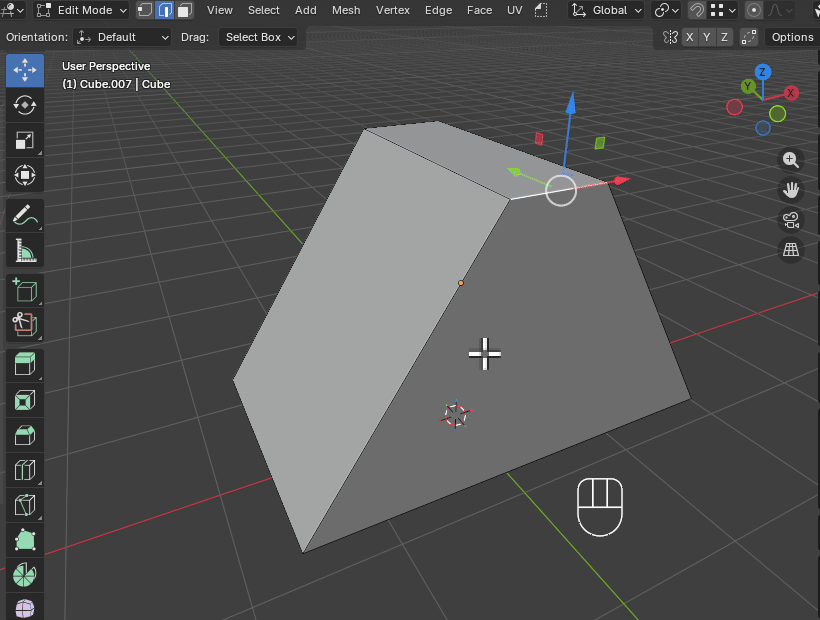
06
Bisect
Schneidet eine Linie durch ausgewählte Flächen und kann beide Hälften löschen.
Bisect + Strg-verändert den Winkel in 5°-Schritten
07
Edge/Point Slide
Verschiebt Kanten und Punkte entlang der vorherigen Form.
2 × G-Edge/Point Slide - verschiebt Kanten und Punkte an der Form entlang
2 × G + C-verschiebt die Punkte entlang ihrer Richtung über die vorherige Form hinaus
Flächen & Kanten
Geometrie erzeugen und trennen
Flächen zwischen Kanten schließen, offene Bereiche füllen und Verbundenes wieder auftrennen.
Rip schneidet Kanten auf. Rip Fill fügt automatisch eine Fläche hinzu.
V-Rip – schneidet Kanten auf
Alt + V-Rip Fill – fügt automatisch eine Fläche hinzu
06
Split
Trennt miteinander verbundene Flächen voneinander, ohne ein neues Objekt zu erstellen.
Y-Split – trennt Flächen voneinander
Modifier
Modifier Stack
Modifier sind sogenannte nicht-destruktive Operationen, die sich auf das Objekt stapeln lassen.
In den folgenden Abschnitten können die einzelnen Modifier nicht in ihrer gesamten Tiefe behandelt werden, aber es werden die gängigsten Optionen besprochen.
Modifier werden immer von oben nach unten abgehandelt. Ihre Reihenfolge kann durch Ziehen verändert werden.
Solange man sie nicht anwendet, liegen sie immer veränderbar wie ein Filter über der ursprünglichen Geometrie.
Sobald man sie anwendet, kann man die Ergebnisse dieser Modifier weiter verändern.
Strg + A-wendet den Modifier unter der Maus an
02
Subdivision Surface
Das Modeling mit dem Subdivision Surface wird häufig genutzt, um glatte und abgerundete Oberflächen zu erzeugen, während man mit nur wenigen Flächen arbeitet.
Strg + 1/2/3-Subdivision-Level im Viewport direkt setzen
Crease
Ausgewählte Kanten und Punkte können entweder mit Edge Crease oder Vertex Crease scharf gezeichnet werden.
Man kann sich das Modell mit → Shade Auto Smooth mit glatter Oberfläche anzeigen lassen.
Artefakte
Triangles und Ngons können beim Subdivision Modeling zu unerwünschten Artefakten führen, wenn sie verformt werden. Am besten möglichst mit Quads modellieren oder solche Flächen gerade halten.
Triangles (3 Punkte) und NGons (5+ Punkte) sind anfällig für Artefakte beim Subdivision Modeling, Quads (4 Punkte) nicht.